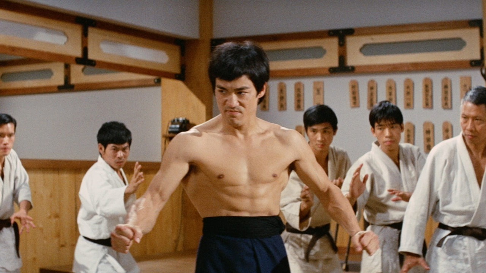
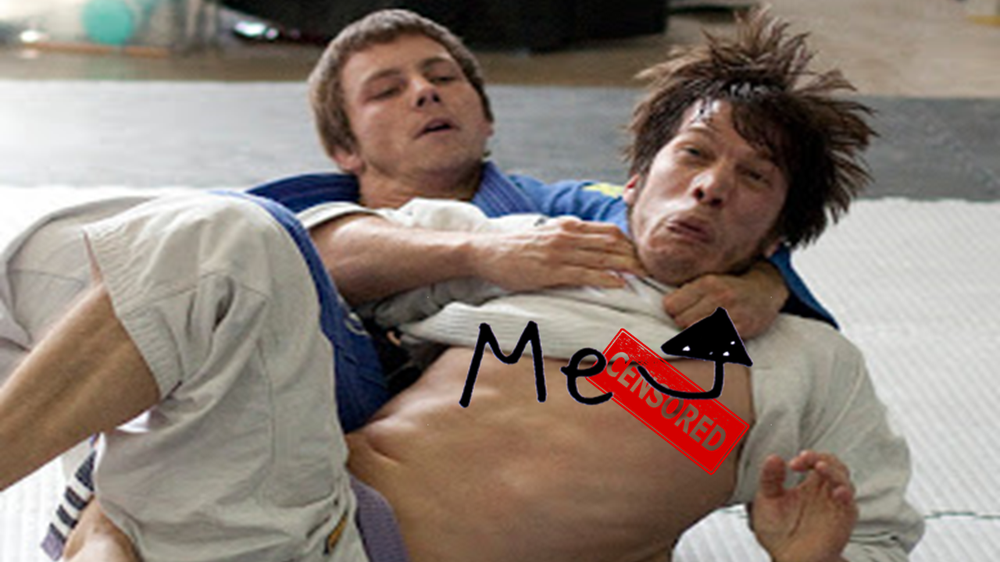

THE GENTLE ART.ificial intelligence
What my colleagues think I do...
What my family and friends think I do...

What I actually do...

The gentle art
Brazilian Jiu Jitsu
Jiu Jitsu derives from the Japanese "Ju" meaning "gentle" and "Jutsu" meaning "art"; therefore, Jiu Jitsu generally translate to the "gentle art".
martial art - combat sport - ground fighting - joint locks - choke holds - takedowns
OpenPose
Real-time multi-person detection library with the capability of jointly detecting human body, hand, facial and foot keypoints on single images.
open source - supports multiple languages - supports multiple operating systems - 2D keypoint detections - 3D keypoint detections